Quantum Correction to Electronic Stopping Power
Headline sentence goes here — lead with the result: treating the projectile quantum-mechanically (as a wavepacket) suppresses the stopping power to about half the classical value. Write after viewing the plots.
Classical point charge vs. quantum wavepacket at E = 100 eV: identical setup, but the wavepacket deposits ~half the energy — so its stopping power is ~half (bulk limit, Lz→∞). Uncertainties are the linear-vs-quadratic extrapolation spread over three slab thicknesses.
Why electronic stopping power matters
Narrative placeholder (you write): a charged particle slowing in matter deposits energy electronically (radiation damage); low-energy electrons (~10 eV) drive DNA damage; at that scale the projectile is quantum, and the classical point-charge picture breaks down.
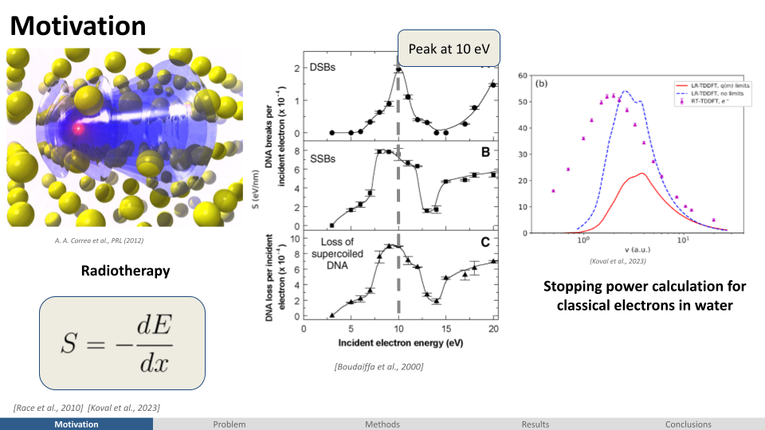
A quantum projectile, not a point charge
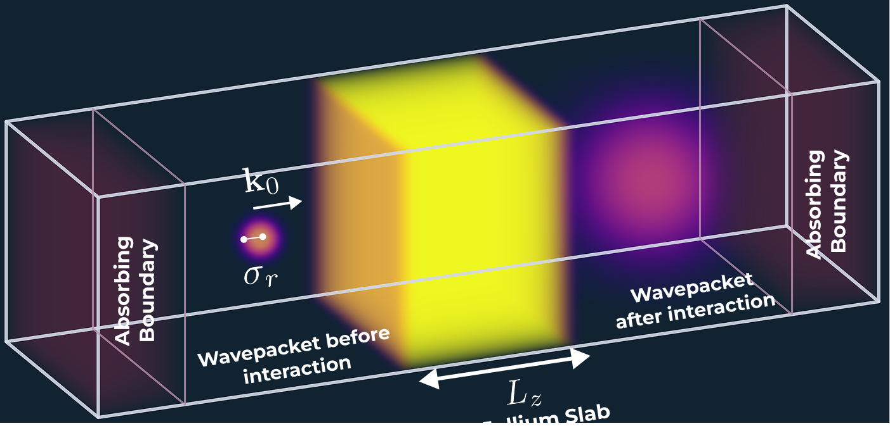
Brief explanation placeholder (you write): the field-standard method propagates a classical point charge through the target in rt-TDDFT. Here the projectile electron is represented as a Gaussian wavepacket — an extra Kohn–Sham orbital with width σr and mean momentum k₀ — and propagated quantum-mechanically alongside the target electrons. Absorbing boundaries collect what leaves. The aim: quantify the quantum correction to the classical stopping power.
Extrapolating to the infinite slab
Placeholder: a single slab of thickness Lz gives a length-dependent S; plotting S against 1/Lz and extrapolating to 1/Lz→0 gives the bulk limit. Each limit is a fit through three lengths (Lz = 15/30/45 Bohr) — shown openly.
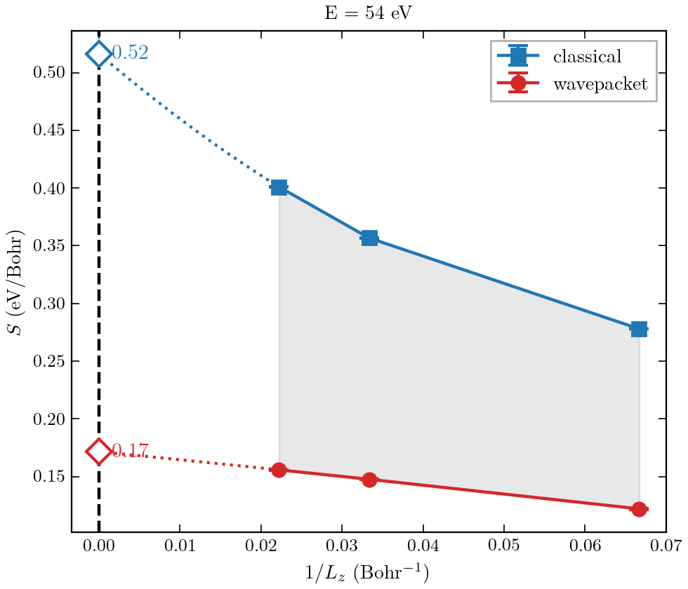
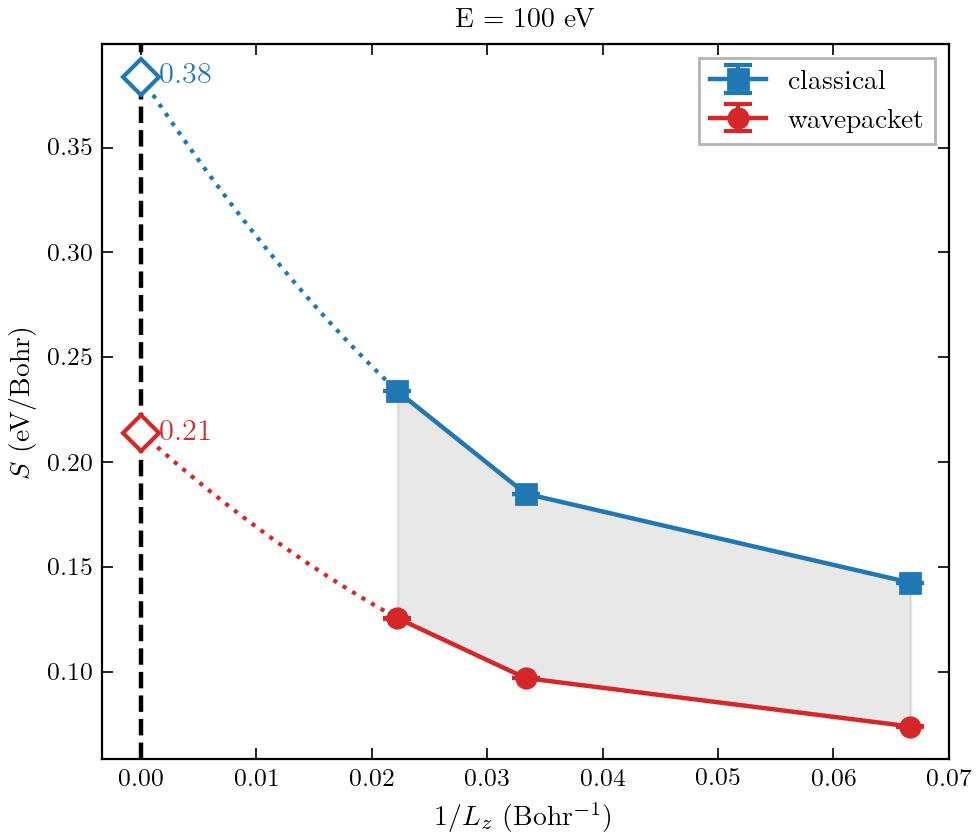
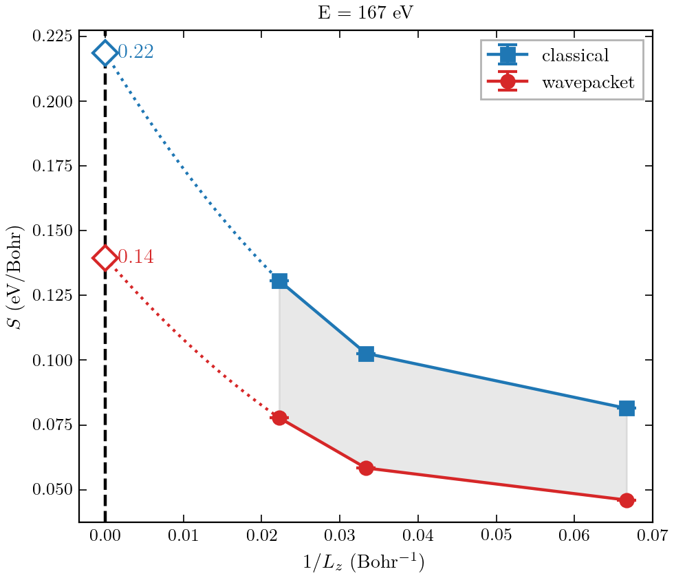
The quantum correction across energies
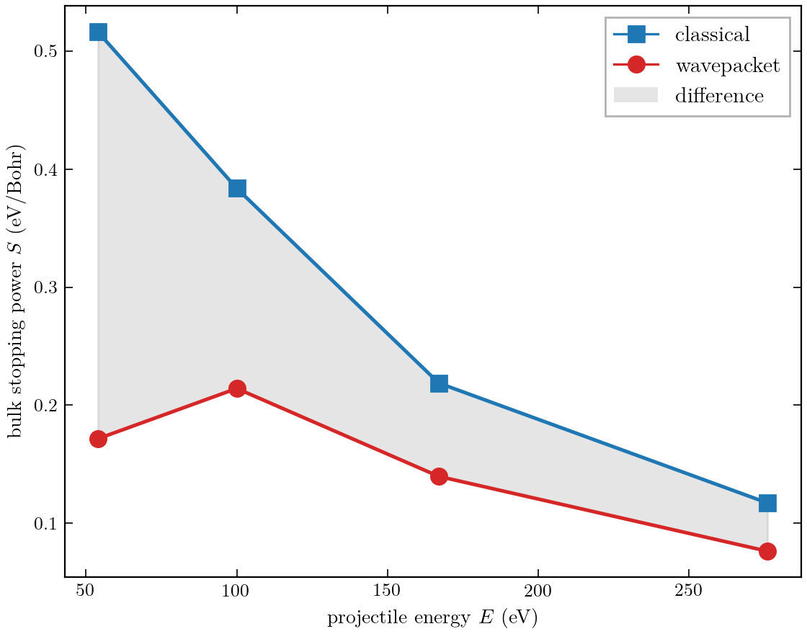
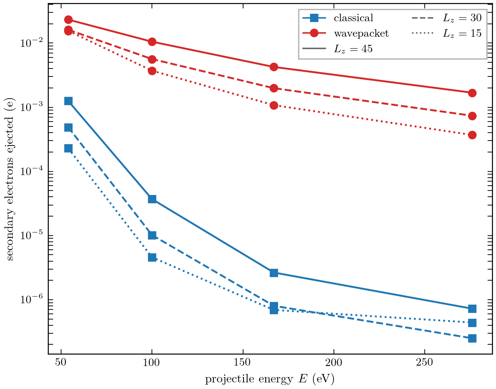
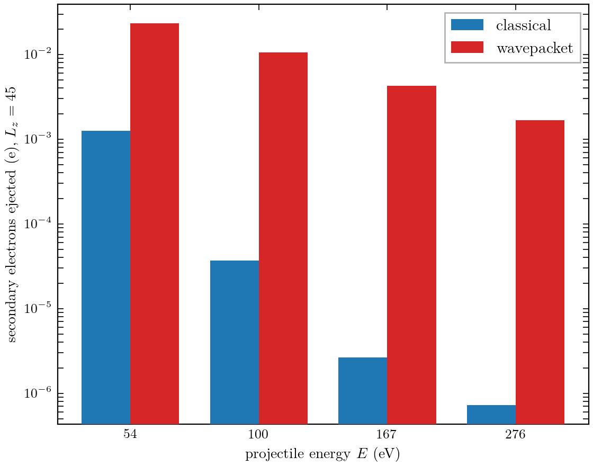
A wavepacket incident on coronene
Placeholder: extending the quantum-projectile method from jellium to a real molecular target (coronene), with the same absorbing-boundary treatment.
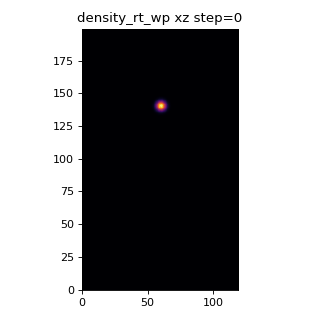
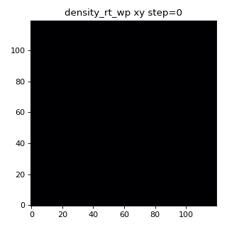
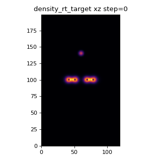
Under the hood
Placeholder: a short tour of the codebase/architecture behind these simulations (you explain). Full source is linked below.
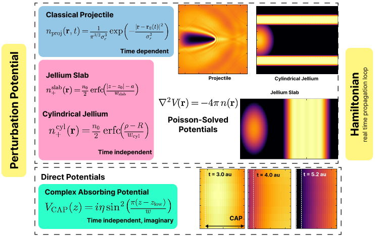
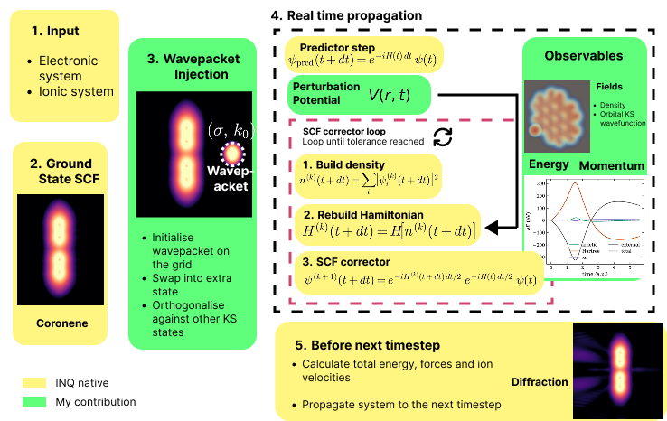
Source code: github.com/KrishnaBellamkonda/inq-tddft-research ↗
Summary & outlook
Conclusion placeholder (you write): restate the quantum correction, its energy dependence, the secondary-emission enhancement, and next steps (real targets, lower energies, the biological regime).